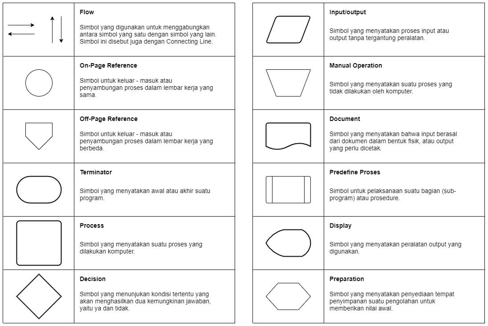

Flowchart dalam Menghitung Jumlah Deret Aritmatika
by Sulthan Adam Rahmadi - 240605110109
Posted on September 05, 2024 at 12:25 PM
Pengertian Flowchart
Flowchart adalah diagram yang menampilkan langkah-langkah dan keputusan dalam menjalankan sebuah proses atau program. Setiap langkah digambarkan dengan bentuk diagram yang dihubungkan dengan garis atau panah untuk menunjukkan alur proses.
Flowchart sangat penting dalam pengembangan program, terutama untuk memperjelas langkah-langkah yang harus diambil dan mengurangi kesalahpahaman di antara anggota tim. Diagram ini membantu menghubungkan kebutuhan teknis dan non-teknis dengan lebih mudah.
Fungsi Flowchart
Fungsi utama flowchart adalah untuk menggambarkan alur program dari satu proses ke proses lainnya, sehingga membuatnya lebih mudah dipahami oleh semua pihak. Selain itu, flowchart juga berfungsi untuk menyederhanakan rangkaian prosedur, sehingga informasi yang disajikan lebih mudah dipahami.
Jenis-Jenis Flowchart
Flowchart sendiri terdiri dari lima jenis, masing-masing jenis memiliki karakteristik dalam penggunaanya. Berikut adalah jenis-jenisnya:
-
Flowchart Dokumen
Pertama ada flowchart dokumen (document flowchart) atau bisa juga disebut dengan paperwork flowchart. Flowchart dokumen berfungsi untuk menelusuri alur form dari satu bagian ke bagian yang lain, termasuk bagaimana laporan diproses, dicatat, dan disimpan.
-
Flowchart Program
Selanjutnya kita akan membahas flowchart program. Flowchart ini menggambarkan secara rinci prosedur dari proses program. Flowchart program terdiri dari dua macam, antara lain: flowchart logika program (program logic flowchart) dan flowchart program komputer terinci (detailed computer program flowchart).
-
Flowchart Proses
Flowchart proses adalah cara penggambaran rekayasa industrial dengan cara merinci dan menganalisis langkah-langkah selanjutnya dalam suatu prosedur atau sistem.
-
Flowchart Sistem
Yang keempat ada flowchart sistem. Flowchart sistem adalah flowchart yang menampilkan tahapan atau proses kerja yang sedang berlangsung di dalam sistem secara menyeluruh. Selain itu flowchart sistem juga menguraikan urutan dari setiap prosedur yang ada di dalam sistem.
-
Flowchart Skematik
Terakhir ada flowchart skematik. Flowchart ini menampilkan alur prosedur suatu sistem, hampir sama dengan flowchart sistem. Namun, ada perbedaan dalam penggunaan simbol-simbol dalam menggambarkan alur. Selain simbol-simbol, flowchart skematik juga menggunakan gambar-gambar komputer serta peralatan lainnya untuk mempermudah dalam pembacaan flowchart untuk orang awam.
Simbol Flowchart
Simbol-simbol dalam flowchart memiliki makna yang berbeda-beda dan masing-masing digunakan untuk tujuan tertentu. Ada simbol yang digunakan untuk menghubungkan simbol-simbol lain, seperti simbol flow, on-page reference, dan off-page reference. Ada pula simbol yang menunjukkan proses yang sedang berlangsung, serta simbol yang digunakan untuk memasukkan input dan menampilkan output.

Contoh Flowchart
Untuk membuat sebuah flowchart sederhana, kita diharuskan untuk mengetahui setiap simbol dan juga fungsinya. Nah, di bawah ini saya akan memberikan sebuah contoh flowchart sederhana untuk menghitung jumlah deret aritmatika yang sudah pernah saya buat algoritmanya pada sadamverse atau pada kompasiana, Berikut adalah contohnya:

Pembahasan:
- Mulai.
- Masukkan suku pertama (misalnya
a = 3), beda antar suku (misalnyab = 2), dan jumlah suku (misalnyan = 5). - Hitung suku terakhir dengan rumus:
suku_terakhir = a + (n - 1) * b. Dalam contoh ini,suku_terakhir = 3 + (5 - 1) * 2 = 11. - Hitung jumlah deret dengan rumus:
jumlah = n * (a + suku_terakhir) / 2. Dalam contoh ini,jumlah = 5 * (3 + 11) / 2 = 35. - Tampilkan hasilnya. Dalam contoh ini, jumlah deret adalah 35.
- Selesai.
Kesimpulan
Flowchart adalah alat visual yang menggambarkan langkah-langkah dan keputusan dalam sebuah proses atau program, menggunakan simbol-simbol yang dihubungkan dengan garis atau panah. Flowchart membantu menjelaskan dan menyederhanakan alur proses, memudahkan pemahaman, dan mengurangi kesalahpahaman. Ada beberapa jenis flowchart, termasuk flowchart dokumen, program, proses, sistem, dan skematik, masing-masing dengan kegunaan spesifik. Simbol-simbol dalam flowchart memiliki makna berbeda, seperti proses, input/output, dan penghubung antar simbol. Contoh penggunaan flowchart dapat mencakup perhitungan matematis sederhana, seperti jumlah deret aritmatika, dengan langkah-langkah yang jelas dari awal hingga akhir.
Daftar Pustaka
- Setiawan, R. (2021). Flowchart Adalah: Fungsi, Jenis, Simbol, dan Contohnya. Dicoding. Diakses dari https://www.dicoding.com/blog/flowchart-adalah/ pada 09 September 2024.